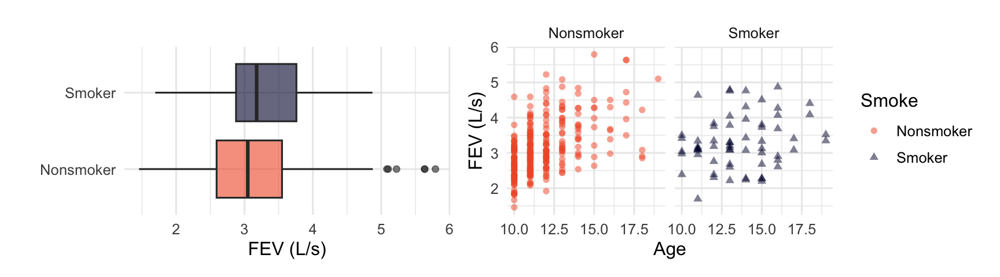
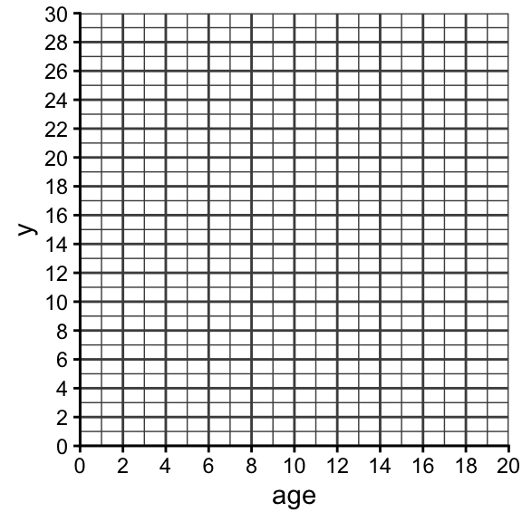
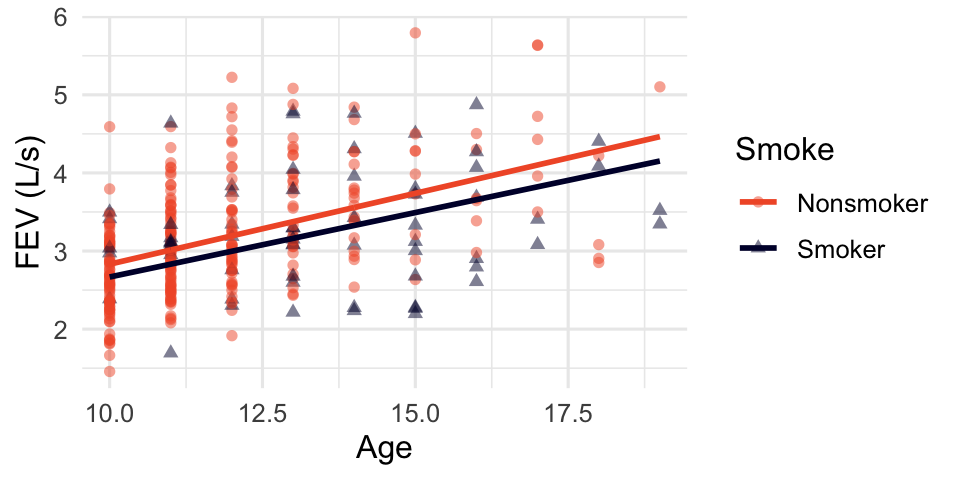
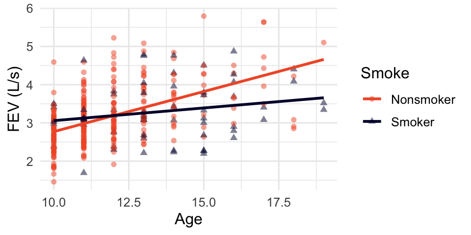
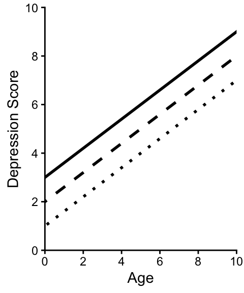
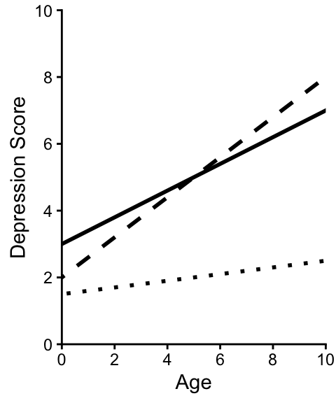

Day 10: Adding Categorical Predictors
New data: lung function and smoking
Goal: investigate the association between smoking and lung capacity using data from 345 adolescents ages 10-19.
| Variable | Description |
|---|---|
FEV |
forced expiratory volume (liters/second) |
Age |
age in years |
Smoke |
Smoker or Nonsmoker |
EDA
Notice smokers skew older – any raw FEV difference between smokers and nonsmokers is tangled up with age. This is exactly why we need a model that controls for both variables at once.
Indicator variables
Regression requires a numeric representation of every variable, so a categorical predictor gets converted to indicator (0/1) columns (e.g. Smoker = _____, Nonsmoker = _____)
Group Task 1
For each regression model, sketch the fitted model. To do this, first write the expression for the fitted model for non-smokers and the fitted model for smokers (i.e., plug in 0 and 1 for the smoker indicator variable). Once you have these two equations, use them to sketch the lines on the provided graph. (Note: fake equation alert! not estimates from the real data)
Model 1: \(\widehat{\mu}(y|x) = 10 + 1 \mathtt{age} -2 \mathtt{smoker}\)
Fitted equation for non-smokers:
Fitted equation for smokers:

Model 2: \(\widehat{\mu}(y|x) = 5 + 1 \mathtt{age} -0.5 \mathtt{age \times smoker}\)
Fitted equation for non-smokers:
Fitted equation for smokers:

Model 3: \(\widehat{\mu}(y|x) = 4 + 0.5 \mathtt{age} + 3\mathtt{smoker} -0.5 \mathtt{age \times smoker}\)
Fitted equation for non-smokers:
Fitted equation for smokers:

ImportantStop here
Let Amanda know when your group finishes!
Three ways to combine a line + a group
- ______________________________________ model: Same rate of increase in both groups, but a different baseline.
\[\mu(y|x) = \beta_0 + \beta_1 \texttt{age} + \beta_2 \texttt{smoker}\]
- \(\beta_0\): intercept for nonsmokers
- \(\beta_0 + \beta_2\): intercept for smokers
- \(\beta_1\): slope for ___________________________
- ______________________________________ model: Same baseline (at age 0), but age affects FEV differently for smokers and nonsmokers.

\[\mu(y|x) = \beta_0 + \beta_1 \texttt{age} + \beta_2 \texttt{age} \times \texttt{smoker}\]
- \(\beta_0\): intercept for ___________________________
- \(\beta_1\): slope for nonsmokers
- \(\beta_1 + \beta_2\): slope for smokers
- ______________________________________ model: Both the baseline and the rate of increase differ by group.

\[\mu(y|x) = \beta_0 + \beta_1 \texttt{age} + \beta_2 \texttt{smoker} + \beta_3 \texttt{age} \times \texttt{smoker}\]
- \(\beta_0\): intercept for nonsmokers
- \(\beta_0 + \beta_2\): intercept for smokers
- \(\beta_1\): slope for nonsmokers
- \(\beta_1 + \beta_3\): slope for ___________________________
Fitting the separate lines model in R:
fev_sep <- lm(FEV ~ Age * Smoke, data = fev)
coef(fev_sep) (Intercept) Age SmokeSmoker Age:SmokeSmoker
0.6747724 0.2097247 1.7197133 -0.1432927 R names an indicator after the level that is coded 1. The level that never appears in a coefficient name is the reference level.
Here, the reference level is ___________________________.
| R output | Model term | Meaning |
|---|---|---|
(Intercept) |
\(\beta_0\) | intercept for nonsmokers (reference level) |
Age |
\(\beta_1\) | slope for nonsmokers |
SmokeSmoker |
\(\beta_2\) | difference in intercepts (smokers \(-\) nonsmokers) |
Age:SmokeSmoker |
\(\beta_3\) | difference in slopes (smokers \(-\) nonsmokers) |
Example: Write the fitted regression line for nonsmokers and for smokers.
Example: A TRUE/FALSE predictor
weekend in the bikes data is TRUE/FALSE, so R treats TRUE as 1 and names the coefficients weekendTRUE and temp_actual:weekendTRUE:
coef(lm(rides ~ temp_actual * weekend, data = bikes)) (Intercept) temp_actual weekendTRUE
-1843.8674329 87.1729679 -714.9382143
temp_actual:weekendTRUE
0.4110155 More than two categories
Motivating example: Let’s say we want to incorporate season (fall, spring, summer, winter) from the bikes data.
A bad idea: convert the column to a single number: Fall \(\to 1\), Winter \(\to 2\), Spring \(\to 3\), Summer \(\to 4\), then fit \(\mu(\text{rides} \mid \text{season}) = \beta_0 + \beta_1 \, \texttt{season}\).
This is wrong. It forces the seasons onto an arbitrary numeric scale and assumes that the “jump” from fall to winter is the same size and direction as the jump from spring to summer.
A better idea: indicator (dummy) variables
For a categorical variable with \(k\) levels, create \(k - 1\) indicator variables (one level is left out as the reference level).
| season | seasonwinter | seasonspring | seasonsummer |
|---|---|---|---|
| winter | 1 | 0 | 0 |
| fall | 0 | 0 | 0 |
| spring | 0 | 1 | 0 |
| spring | 0 | 1 | 0 |
| fall | 0 | 0 | 0 |
| summer | 0 | 0 | 1 |
The reference level in this case is ___________.
Group Task 2
Researchers investigated the association of depression with age and education, based on a nationwide (U.S.) telephone survey of 2,031 adults aged 18 to 90. Of particular interest was their finding that the association of depression with education strengthens with increasing age—a phenomenon they called the “divergence hypothesis.”
The researchers constructed a depression score from responses to several related questions. Education was categorized as (i) college degree, (ii) high school degree plus some college, or (iii) high school degree only. In the sketches below, the line type represents education: solid = college degree, dashed = high school plus some college, dotted = high school only.
- Define indicator variables that represent the
educationcategory. (Start by determining how many indicators you need. Then define them.)
- Suppose that one researcher wants to fit a model that represents the below sketch. Carefully write the mean function for the regression model that you should fit.

- Suppose that one researcher wants to fit a model that represents the below sketch. Carefully write the mean function for the regression model that you should fit.

ImportantStop here
Let Amanda know when your group finishes!